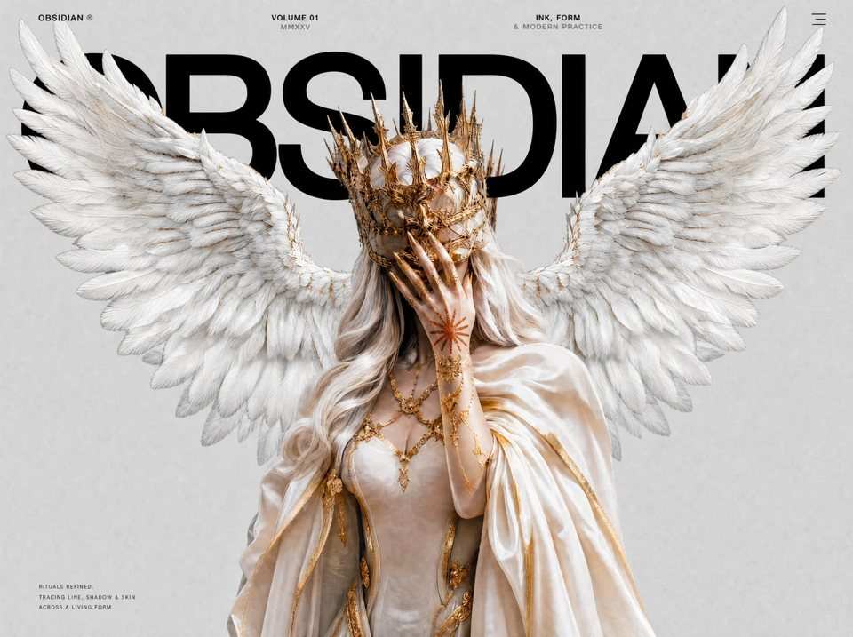

Obsidian
Interactiveinteractiveyilai-ai 公开页面
收录时间：2026-08-28正文：17,243 字符

本地预览图 · jpeg
完整提示词
Build a single-page website called **OBSIDIAN** — a dark, editorial, high-fashion tattoo-studio landing page with a scroll-scrubbed fullscreen video hero. Recreate it EXACTLY as specified below: every URL, color, Tailwind class, animation constant, easing curve, and line of copy is intentional. Do not substitute, paraphrase, or "improve" anything.
## 1. Stack & project setup
- Vite + React 18 + TypeScript + Tailwind CSS 3.4 (default config, no theme extensions, no plugins).
- Vite alias: `'@'` → `./src`.
- Files: `src/main.tsx` (StrictMode + createRoot), `src/App.tsx`, `src/index.css`, `src/components/Navbar.tsx`, `src/components/ScrollVideoHero.tsx`, `src/components/ClosingSection.tsx`.
- `App.tsx` renders, inside `<div className="bg-[#DADADA]">`: `<Navbar />`, `<ScrollVideoHero />`, `<ClosingSection />` — in that order. Nothing else.
## 2. index.html (head)
- `<title>OBSIDIAN</title>`
- Font stylesheet link (this is the exact font source — keep it):
`<link href="https://db.onlinewebfonts.com/c/95cecf452d3208890088a5b4c19c7ecf?family=Helvetica+Neue+ME" rel="stylesheet">`
- Inline style to prevent white flash: `html,body,#root{background:#DADADA;margin:0}`
## 3. Global CSS (src/index.css)
After the three `@tailwind` directives:
- `* { margin: 0; padding: 0; box-sizing: border-box; }`
- `html { scroll-behavior: auto; background: #DADADA; }`
- `body { font-family: 'Helvetica Neue ME', 'Helvetica Neue', Helvetica, Arial, sans-serif; background: #DADADA; color: #ffffff; overflow-x: hidden; }`
- Hide the scrollbar entirely: `::-webkit-scrollbar { width: 0px; background: transparent; }`
Every headline/body element that sets a font inline uses `style={{ fontFamily: "'Helvetica Neue ME', 'Helvetica Neue', sans-serif" }}`.
## 4. Navbar component
### 4a. Fixed top bar
`<nav>` — `fixed top-0 left-0 right-0 z-[60] flex items-start justify-between px-5 md:px-10 pt-4 md:pt-5 pb-4 mix-blend-difference pointer-events-none`. The `mix-blend-difference` makes the white text invert over light/dark content. Four children, all `text-[10px] md:text-xs tracking-[0.15em] uppercase text-white leading-tight`:
1. Left (pointer-events-auto): `OBSIDIAN` in `font-medium`, then a space, then `©` in a span with `opacity-50`.
2. Center block 1 (`text-center hidden sm:block`): line 1 `VOLUME 01`, line 2 `MMXXV` with `opacity-50`.
3. Center block 2 (`text-center hidden md:block`): line 1 `INK, FORM`, line 2 `& MODERN PRACTICE` with `opacity-50`.
4. Hamburger button (`pointer-events-auto relative w-7 h-5 flex flex-col justify-between items-end focus:outline-none`, aria-label toggles "Open menu"/"Close menu"). Three `<span>`s, each `block h-[1.5px] bg-white transition-all duration-500 ease-[cubic-bezier(0.76,0,0.24,1)]`:
- Top span (`origin-center`): width 100%; open → `translateY(7.5px) rotate(45deg)`.
- Middle span: width 60% closed / 100% open; open → `opacity: 0` and `scaleX(0)`.
- Bottom span (`origin-center`): width 80% closed / 100% open; open → `translateY(-7.5px) rotate(-45deg)`.
### 4b. Fullscreen menu overlay
Fixed `inset-0 z-[55]`, revealed with a **clip-path curtain**: `transition-all duration-700 ease-[cubic-bezier(0.76,0,0.24,1)]`, `clipPath: 'inset(0% 0% 100% 0%)'` closed → `'inset(0% 0% 0% 0%)'` open; `pointerEvents: 'none'` when closed. Inside: an absolute `inset-0 bg-black/[0.97] backdrop-blur-md` layer, then content wrapper `relative z-10 h-full flex flex-col justify-between px-6 md:px-12 lg:px-16 pt-24 pb-10`. While open, set `document.body.style.overflow = 'hidden'` (restore on close/unmount).
Nav links (`flex flex-col gap-1`), five anchors — **Atelier, Artists, Gallery, Book, Inquire** — with staggered transition delays **80ms, 160ms, 240ms, 320ms, 400ms**. Each `<a href="#">` closes the menu on click and is `group block overflow-hidden py-2` containing a span:
`block text-[11vw] sm:text-[8vw] md:text-[6vw] font-black uppercase text-white/90 leading-[1.1] tracking-[-0.03em] transition-all duration-700 ease-[cubic-bezier(0.76,0,0.24,1)] group-hover:text-white group-hover:translate-x-3`, Helvetica Neue ME inline font, transform `translateY(110%)` closed → `translateY(0)` open (delay applies only when opening; `0ms` when closing). The `overflow-hidden` parent creates the masked slide-up reveal.
Bottom info row: `flex flex-col sm:flex-row items-start sm:items-end justify-between gap-6 transition-all duration-500 ease-[cubic-bezier(0.76,0,0.24,1)]`, opacity 0 + `translateY(20px)` closed → opacity 1 + `translateY(0)` open with **450ms** delay (0ms when closing). Three blocks:
- Label `Location` (`text-[10px] tracking-[0.25em] uppercase text-white/30 mb-1.5`), value `Brooklyn, New York` (`text-xs text-white/50 font-light leading-relaxed`, HN ME font).
- Label `Inquiries` (same label style), value `hello@obsidian.studio` (`text-xs text-white/50 font-light`, HN ME font).
- `hidden sm:block`: `© OBSIDIAN MMXXV` (`text-[10px] tracking-[0.2em] uppercase text-white/20`).
## 5. ScrollVideoHero component — the core of the page
### 5a. Structure
`<section>` — `relative`, inline `height: '500vh'`. Inside, a single pinned viewport: `sticky top-0 w-full h-screen overflow-hidden bg-[#DADADA] will-change-transform`. Layers, bottom to top:
1. **`<video>`** — `src` EXACTLY:
`https://d8j0ntlcm91z4.cloudfront.net/user_38xzZboKViGWJOttwIXH07lWA1P/hf_20260821_132241_f0feb221-ccb9-4dce-87b4-7dfa66adabb6.mp4`
Attributes: `muted playsInline preload="auto"`, classes `absolute inset-0 w-full h-full object-cover`, inline `opacity: 0; background: #DADADA; willChange: auto`. Paused; scrubbed only via `currentTime`. Set opacity to `'1'` on `loadeddata` and `seeked` events (and immediately if `readyState >= 2`).
2. **`<canvas width={1280} height={720}>`** — `absolute inset-0 w-full h-full object-cover transition-opacity duration-200`, inline `opacity: 0`. Painted from a decoded frame bank; fades in over the video once the first bank frame is drawn.
3. **Hero overlay image** — div `absolute inset-0 z-30 pointer-events-none` containing `<img>` (empty alt, `w-full h-full object-cover`) with `src` EXACTLY:
`https://thus-sweat-74219310.figma.site/_assets/v11/00ad4deaa54b762c872a70c72f90c221ddf982e9.png`
(a full-screen transparent PNG sitting above everything in the hero).
4. **Hero content (section 1)** — div `absolute inset-0 z-10 flex flex-col`:
- Centered title wrapper `flex justify-center mt-12 md:mt-14` with `<h1>OBSIDIAN</h1>` — `text-[20vw] md:text-[22vw] font-black tracking-[-0.04em] leading-[0.75] text-black uppercase select-none`, HN ME inline font. The giant black title sits BELOW the overlay PNG (z-10 vs z-30), so the PNG's subject visually overlaps the type.
- Bottom-left caption `absolute bottom-6 left-6 md:left-10 md:bottom-8`, `<p>` `text-[9px] md:text-[10px] tracking-[0.15em] uppercase leading-[1.8] text-black/80` with `<br/>`s:
`RITUALS REFINED:` / `TRACING LINE, SHADOW & SKIN` / `ACROSS A LIVING FORM.`
5. **Sections 2–5** — four absolute `inset-0 z-20 will-change-transform` overlay divs, each starting inline `opacity: 0; pointerEvents: 'none'; transform: translateY(100%)` (all motion applied via JS, no CSS transitions on these).
### 5b. Scroll → progress math (all in refs + rAF; zero React re-renders)
- `measure()`: `start = window.scrollY + section.getBoundingClientRect().top`; `end = start + section.offsetHeight - window.innerHeight`. Re-measure on resize.
- On scroll (passive listener): `progress = clamp((scrollY − start) / (end − start), 0, 1)`; `targetTime = progress × video.duration`; call `applyPositions(progress, scrollPx)` where `scrollPx = max(0, scrollY − start)`.
- **rAF render loop** (started on `loadedmetadata`): exponential smoothing of playback time —
`dt = min(0.1, (now − last)/1000)`; `smoothing = 1 − e^(−dt × 10)` (LERP_TAU = 10); `current += (target − current) × smoothing`; snap `current = target` when `|target − current| < 0.002` (SNAP). If `prefers-reduced-motion: reduce`, pin `current = 0`.
- Drawing: if the frame bank is ready, paint from it; otherwise fall back to seeking the video element: when `!video.seeking && |video.currentTime − current| > 0.01`, set `video.currentTime = current` (try/catch).
### 5c. applyPositions(progress, scrollPx)
- Hero title/caption: `heroScroll = max(0, 1 − progress × 8)` (fully gone by progress 0.125); apply to hero content `opacity = heroScroll` and `transform = translateY(((1 − heroScroll) × −30)%)` — it drifts up 30% while fading.
- Overlay PNG: `opacity = max(0, 1 − max(0, scrollPx − 150) / 30)` — solid for the first 150px of scroll, then fades out over the next 30px.
- Sections 2–5 occupy fifths 1–4 of progress (hero is fifth 0). For section index i:
`local = (progress − i/5) / (1/5)`; `t = 1` if local < 0, `−1` if local > 1, else `1 − 2·local`.
Apply `transform: translateY(t×100%)`; `opacity = |t| < 1 ? 1 : 0`; `pointerEvents = |t| < 1 ? 'auto' : 'none'`. Each section slides up through the viewport (enters from bottom at t=1, centered at t=0, exits top at t=−1) as you scroll its fifth.
### 5d. Section content (exact copy)
- **Section 2** (`flex flex-col justify-start p-6 md:p-12 lg:p-16`; inner `max-w-md mt-12 md:mt-20`): label `ORIGIN` (`text-[11px] tracking-[0.25em] uppercase text-black/50 mb-5`), body (`text-base md:text-lg leading-[1.7] text-black/85 font-light`, HN ME): "Obsidian Studio, established by globally acclaimed visionaries of Fine Line Tattoo, Micro Realism Tattoo, and Minimalist Tattoo, Elias Varen and Mira Solenne, unites the world's and Brooklyn's finest tattoo artists in Brooklyn, NYC."
- **Section 3** (`flex items-start justify-end p-6 md:p-12 lg:p-16 pt-20 md:pt-28`): dark card `bg-black/85 backdrop-blur-sm px-6 py-5 max-w-[340px] border border-white/5`; label `Premise` (`text-[11px] tracking-[0.25em] uppercase text-white/40 mb-3`), body (`text-sm md:text-[15px] leading-[1.7] text-white/75 font-light`, HN ME): "Here in our studio is a refuge for intention, where patience meets technique and craft dissolves all limits. With global reverence and an unwavering devotion to the singular."
- **Section 4** (plain `absolute inset-0 z-20`): (a) top-right text `absolute top-12 md:top-16 right-6 md:right-12 lg:right-16 max-w-[320px] text-right` (`text-sm md:text-[15px] leading-[1.7] text-black/75 font-light`, HN ME): "singular visions into striking one of a kind tattoos in partnership with the most refined artists from NYC and from across the globe."; (b) bottom-left dark card `absolute bottom-12 md:bottom-16 left-6 md:left-12 lg:left-16 bg-black/85 backdrop-blur-sm px-6 py-5 max-w-[340px] border border-white/5`, label `Process` (same style as Premise), body (same style): "We treat each tattoo as a silent dialogue, a mark that emerges from your story. Your form is a page, and we aspire to inscribe narratives that capture your singularity and essence."
- **Section 5** (`flex items-center`, inner `pl-6 md:pl-12 lg:pl-16`): `<h2>` `FIND<br/>YOUR<br/>ARTIST` — `text-[20vw] md:text-[15vw] font-black leading-[0.82] tracking-[-0.03em] text-neutral-900 uppercase select-none`, HN ME.
### 5e. Frame-bank scrub engine (WebCodecs + MP4Box) — build this exactly
Goal: butter-smooth scrubbing by pre-decoding the whole MP4 into WebP frame blobs, then blitting ImageBitmaps to the canvas — falling back gracefully to `video.currentTime` seeking.
- Constants: `LERP_TAU = 10`, `SNAP = 0.002`, `LRU_MAX = 28`, `LEAD = 20`, `WATCHDOG_MS = 45000`.
- Lazy-load MP4Box from `https://cdn.jsdelivr.net/npm/mp4box@0.5.2/dist/mp4box.all.min.js` by injecting a `<script>` (resolve `window.MP4Box`; reuse if already present).
- Start building after `window` `load` (or immediately if `document.readyState === 'complete'`), and only once video metadata/duration is known. Skip entirely if `prefers-reduced-motion` or `typeof VideoDecoder === 'undefined'`.
- Bank state: `frames: {ts, blob}[]`, `lru: Map<index, ImageBitmap|null>`, `drawnIndex`, `ready`, `reverted`, `painted`.
- Pipeline: `fetch(VIDEO_URL)` → `arrayBuffer` → set `buf.fileStart = 0` → `mp4boxfile.appendBuffer(buf)` + `flush()`. In `onReady`: take `info.videoTracks[0]`, extract the codec description from the sample-description box (`avcC || hvcC || vpcC || av1C`) by writing the box to a BIG_ENDIAN DataStream and taking `new Uint8Array(stream.buffer, 8)`; configure `VideoDecoder` with `{ codec: track.codec, codedWidth: track.video.width, codedHeight: track.video.height, description }`; `setExtractionOptions(track.id, null, { nbSamples: Infinity })`; `start()`; collect all samples via `onSamples`.
- Decode with backpressure: feed `EncodedVideoChunk`s (`type: is_sync ? 'key' : 'delta'`, `timestamp: cts × 1e6 / timescale`, `duration: duration × 1e6 / timescale`); never let more than `LEAD` (20) chunks be in flight ahead of completed outputs (await a counter-based `until(i − LEAD)` promise).
- Decoder output (serialized through a promise chain): draw each `VideoFrame` onto a lazily-sized offscreen canvas (`alpha: false`, sized to `codedWidth/Height`, fallback 1280×720), `close()` the frame, then `canvas.toBlob(..., 'image/webp', 0.82)` and push `{ts: frame.timestamp, blob}`.
- Finalize: `decoder.flush()` → await chain → sort frames by `ts` → `createImageBitmap` the frame nearest current time, seed the LRU, set `ready = true`, draw immediately.
- Drawing from bank: binary-search `nearestIndex` over `ts` (microseconds; compare against `t × 1e6`); if the LRU has that bitmap and index ≠ `drawnIndex`, `ctx.drawImage(bm, 0, 0, canvas.width, canvas.height)` on a 2D context created with `{ alpha: false }`; on the very first paint set canvas opacity to `'1'` (CSS transition fades it in over 200ms). After each draw, warm the LRU for indices `i−1 … i+2` (async `createImageBitmap` per blob, placeholder `null` while pending); evict oldest entries beyond 28, calling `.close()` on evicted bitmaps.
- Failure ladder: any decoder error on the first (hardware) pass → reset the bank and retry once with `hardwareAcceleration: 'prefer-software'`; failure on the soft pass, MP4Box error, fetch failure, no samples, or a 45s watchdog timeout → **revert**: mark `reverted`, `ready = false`, canvas opacity `'0'` (the raw `<video>` seek fallback keeps working). On unmount: abort build, remove all listeners, cancel rAF, close + clear all LRU bitmaps.
## 6. ClosingSection component
`<section>` — `relative min-h-screen bg-black flex flex-col justify-between overflow-hidden`:
1. Top rule: wrapper `w-full px-6 md:px-12 lg:px-16 pt-16 md:pt-20` containing `<div class="h-px bg-white/10 w-full" />`.
2. Main (`flex-1 flex flex-col justify-center px-6 md:px-12 lg:px-16 py-16`):
- Label `Convictions` — `text-[10px] tracking-[0.3em] uppercase text-white/30 mb-8`.
- Statement `<h2>` — `text-[8vw] sm:text-[7vw] md:text-[5vw] lg:text-[4vw] font-light leading-[1.15] tracking-[-0.02em] text-white/90 max-w-5xl`, HN ME: `We don't merely mark skin.` `<br class="hidden sm:block"/>` `<span class="text-white/40"> We distill stories into permanence—</span>` `<br class="hidden sm:block"/>` `<span> one stroke at a time.</span>` (use `—`).
- Subtext `<p>` — `mt-10 text-xs md:text-sm leading-[1.8] text-white/40 font-light max-w-md`, HN ME: "Every work begins as a dialogue and arrives as a partnership. Your history becomes our medium. No shortcuts, no repetition—only purpose translated into ink."
3. Footer (`px-6 md:px-12 lg:px-16 pb-10`): divider `h-px bg-white/10 w-full mb-8`, then `flex flex-col md:flex-row items-start md:items-end justify-between gap-6`:
- Label `Atelier` (`text-[10px] tracking-[0.3em] uppercase text-white/30 mb-2`), value (`text-sm text-white/60 font-light leading-relaxed`, HN ME): `Brooklyn, New York` `<br/>` `By private session only`.
- CTA column (`flex flex-col items-start md:items-end gap-3`): label `Start your journey` (`text-[10px] tracking-[0.3em] uppercase text-white/30`); `<a href="#">` `group inline-flex items-center gap-3 text-white/80 hover:text-white transition-colors duration-300` containing `Schedule a consultation` (`text-sm font-light tracking-wide`, HN ME) and a line `<span class="w-8 h-px bg-white/40 group-hover:w-12 group-hover:bg-white transition-all duration-300" />` that stretches on hover.
- Copyright (`text-right mt-4 md:mt-0`): `© OBSIDIAN MMXXV` — `text-[10px] tracking-[0.2em] uppercase text-white/20`.
## 7. Acceptance checklist
- Page background is `#DADADA` everywhere above the black closing section; no white flash on load; no visible scrollbar; no horizontal overflow.
- The hero pins for exactly 500vh of scroll; the video scrubs forward/backward with scroll with smooth exponential easing (no jitter once the frame bank is ready).
- Giant "OBSIDIAN" fades/drifts away within the first ~12.5% of hero progress; the overlay PNG vanishes right after ~150px of scroll.
- Sections 2–5 each slide vertically through the pinned viewport during their fifth of the scroll range.
- Menu opens as a top-down clip-path curtain with staggered link reveals; hamburger morphs into an X; top bar text inverts over content via mix-blend-difference.
- With `prefers-reduced-motion: reduce`, the video stays on frame 0 and no frame bank is built; if WebCodecs/MP4Box fail, scrubbing still works via native video seeking.把上面的提示词完整复制到支持长文本的 AI 工具中，再按需要替换品牌名、配色与文案。提示词描述的是整页结构与动效节奏，生成后建议在真实浏览器里检查首屏加载和移动端表现。
来源与版权
该条目来自公开提示词页面，原始出处信息未随页面提供。
提示词文本与预览素材的版权归原作者或原平台所有，本站仅作索引与归档。若你是权利人并希望移除本条内容，请通过联系方式告知。